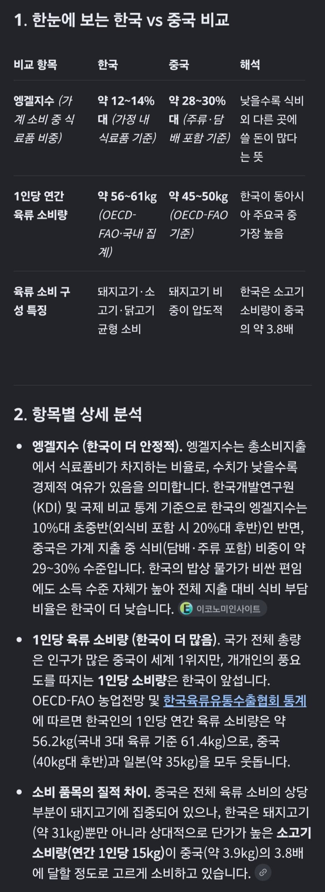
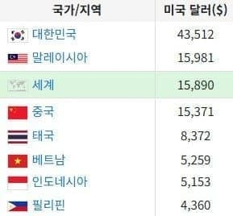
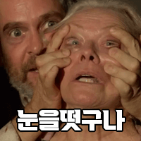

중국인들은 한국인들이 고기 못먹는다며
자신들 삶이 한국보다 부유하다고 생각하는데

소득 중 식비가 차지하는 비율로 그 나라의 발전 정도를 알아보는 '엥겔지수'
식비 부담은 중국이 한국 보다 2배 이상 심하고
일인당 육류소비량은 한국이 중국보다 우위다
한국 드라마에서 흔히 보이는
고기 사주세요 타령은 보통 프리미엄 소고기 한우를 뜻함
일인당 GDP
중국인은 세계 평균 보다도 가난

중국인들은 메타인지 라는게 안되나?
댓글
수집 당시 댓글 499개
ㅇㅇ · 11.25 15:40:48
ㅇㅇ · 11.25 15:44:32
· ㅇㅇ · 11.25 16:23:58
ㅇㅇ · 11.25 15:45:24
ㅇㅇ · 11.25 15:48:31
· ㅇㅇ · 11.25 15:49:27
ㅇㅇ · 11.25 15:51:46
· ㅇㅇ · 11.25 15:51:54
Dd · 11.25 15:56:46
ㅇㅇ · 11.25 15:57:08
ㅇㅇ · 11.25 15:58:54
· ㅇㅇ · 11.25 16:08:24
· ㅇㅇ · 11.25 16:09:02
· ㅇㅇ · 11.25 16:09:54
ㅇㅇ · 11.25 16:01:49
· redlx74l8r48 · 11.25 20:33:32
ㅇㅇ · 11.25 16:05:19
야갤러 · 11.25 16:05:40
씹덕1026일차 · 11.25 16:07:10
ㅇㅇ · 11.25 16:08:21
· ㅇㅇ · 11.25 16:10:12
· ㅇㅇ · 11.25 16:16:31
· ㅇㅇ · 11.25 17:26:32
ㅇㅇ · 11.25 16:18:32
· ㅇㅇ · 11.25 16:19:59
· ㅇㅇ · 11.25 16:23:32
· ㅇㅇ · 11.25 16:40:03
ㅇㅇ · 11.25 16:18:38
ㅇㅇ · 11.25 16:19:07
· ㅇㅇ · 11.25 20:40:34
ㅇㅇ · 11.25 16:21:28
00 · 11.25 16:22:08
ㅇㅇ · 11.25 16:24:38
ㅇㅇ · 11.25 16:24:43
ㅇㅇ · 11.25 16:26:41
· ㅇㅇ · 11.25 16:26:50
ㅇㅇ · 11.25 16:32:03
대 재명
ㅇㅇ · 11.25 16:32:13
갓 재명
ㅇㅇ · 11.25 16:32:22
국격상승
ㅇㅇ · 11.25 16:33:16
· heyzle · 11.25 17:15:12
ㅇㅇ · 11.25 16:35:34
ㅇㅇ · 11.25 16:38:11
ㅇㅇ · 11.25 16:39:00
· ㅇㅇ · 11.25 16:42:03
· redlx74l8r48 · 11.25 20:36:18
· ㅇㅇ · 11.25 21:05:38
난투맨 · 11.25 16:44:11
ㅇㅇ · 11.25 16:45:13
· ㅇㅇ · 11.25 16:47:13
ㅇㅇ · 11.25 17:01:51
· ㅇㅇ · 11.25 17:02:09
ㅇㅇ · 11.25 17:05:14
쉐쉐
이야
ㅇㅇ · 11.25 17:06:38
ㅅㅂ · 11.25 17:09:42
ㅇㅇ · 11.25 17:13:02
· ㅇㅇ · 11.25 17:15:32
· ㅇㅇ · 11.25 17:17:44
· ㅇㅇ · 11.25 17:19:20
ㅇㅇ · 11.25 17:13:49
향격쳐 · 11.25 17:18:35
· dsfafsddffd · 11.25 17:41:50
· dsfafsddffdfd · 11.25 17:41:56
· dsfafsddffdfd · 11.25 17:42:02
· dsfafsddffdfd · 11.25 17:42:09
· df · 11.25 17:42:15
ㅇㅇ · 11.25 17:38:54
ㅇㅇ · 11.25 17:50:58
ㅇㅇ · 11.25 17:53:27
ㅇㅇ · 11.25 18:05:18
한국은
성장중
중국은
추락중
ㅇㅇ · 11.25 18:06:58
ㅇㅇ · 11.25 18:09:55
· redlx74l8r48 · 11.25 20:37:46
빨간약 · 11.25 18:17:26
ㅇㅇ · 11.25 18:18:01
· redlx74l8r48 · 11.25 20:40:03
ㅇㅇ · 11.25 18:23:13
· ㅇㅇ · 11.25 18:24:03
ㅇㅇ · 11.25 18:23:38
ㅇㅇ · 11.25 18:29:34
ㅇㅇ · 11.25 18:52:03
화교충
ㅇㅇ · 11.25 18:53:07
ㅇㅇ · 11.25 19:34:39
ㅇㅇ · 11.25 19:44:33
ㅇㅇ · 11.25 19:46:39
ㅇㅇ · 11.25 19:46:56
· ㅇㅇ · 11.25 19:47:02
찢 · 11.25 19:49:57
· ㅇㅇ · 11.25 20:21:04
ㅇㅇ · 11.25 19:50:55
ㅇㅇ · 11.25 19:53:58
ㅇㅇ · 11.25 19:54:36
ㅇㅇ · 11.25 20:00:57
ㅇㅇ · 11.25 20:14:22
ㅇㅇ · 11.25 20:17:30
ㅇㅇ · 11.25 20:17:59
· ㅇㅇ · 11.25 20:18:04
ㅇㅇ · 11.25 20:28:39
ㅇㅇ · 11.25 20:29:37
ㅇㅇ · 11.25 20:37:45
· ㅇㅇ · 11.25 15:47:44

해갤러 · 11.25 14:22:16
ㅇㅇ · 11.25 14:24:35
· ㅇㅇ · 11.25 14:25:20
· ㅇㅇ · 11.25 14:25:50
· ㅇㅇ · 11.25 14:27:15
· ㅇㅇ · 11.25 14:27:21
· ㅇㅇ · 11.25 14:29:15
· ㅇㅇ · 11.25 14:31:30
· ㅇㅇ · 11.25 14:32:12
· ㅇㅇ · 11.25 14:33:35
· ㅇㅇ · 11.25 14:35:26
· ㅇㅇ · 11.25 14:37:41
· ㅇㅇ · 11.25 14:40:25
· ㅇㅇ · 11.25 14:44:48
· ㅇㅇ · 11.25 15:44:43
<:)~ · 11.25 14:25:03
· ㅇㅇ · 11.25 14:30:47
· <:)~ · 11.25 14:31:10
· ㅇㅇ · 11.25 14:35:42
· <:)~ · 11.25 14:38:08
· ㅇㅇ · 11.25 14:39:25
· <:)~ · 11.25 14:40:19
ㅇㅇ · 11.25 14:26:40
ㅇㅇ · 11.25 14:27:19
ㅇㅇ · 11.25 14:28:11
ㅇㅇ · 11.25 14:28:30
석궁사수 · 11.25 14:28:55
ㅇㅇ · 11.25 14:29:17
ㅇㅇ · 11.25 14:29:46
· ㅇㅇ · 11.25 14:33:31
· 해갤러 · 11.25 14:35:35
ㅇㅇ · 11.25 14:31:22
ㅇㅇ · 11.25 14:31:52
ㅇㅇ · 11.25 14:33:45
ㅇㅇ · 11.25 14:33:46
· ㅇㅇ · 11.25 14:35:07
ㅇㅇ · 11.25 14:34:06
ㅇㅇ · 11.25 14:34:49
· ㅇㅇ · 11.25 14:38:09
· ㅇㅇ · 11.25 14:39:12
ㅇㅇ · 11.25 14:37:14
ㅇㅇ · 11.25 14:37:23
ㅇㅇ · 11.25 14:38:25
ㅇㅇ · 11.25 14:38:46
ㅇㅇ · 11.25 14:40:11
ㅇㅈㄷㅅ · 11.25 14:40:15
ㅇㅇ · 11.25 14:41:34
· o o · 11.25 14:51:27
ㅇㅇ · 11.25 14:42:14
· ㅇㅇ · 11.25 14:42:31
ㅇㅇ · 11.25 14:42:46
ㅇㅇ · 11.25 14:46:49
o o · 11.25 14:50:37
히이잉 · 11.25 14:51:10
ㅇㅇ · 11.25 14:54:21
ㅇㅇ · 11.25 14:55:38
ㅇㅇ · 11.25 14:55:53
ㅇㅇ · 11.25 14:57:22
ㅇㅇ · 11.25 14:59:10
· ㅇㅇ · 11.25 15:00:06
· ㅇㅇ · 11.25 15:05:48
· ㅇㅇ · 11.25 15:13:18
· ㅇㅇ · 11.25 15:23:07
· ㅇㅇ · 11.25 16:00:03
· ㅇㅇ · 11.25 17:42:24
ㅇㅇ · 11.25 15:00:18
ㅇㅇ · 11.25 15:00:22
ㅇㅇ · 11.25 15:06:20
· ㅇㅇ · 11.25 15:06:30
ㅇㅇ · 11.25 15:07:00
· ㅇㅇ · 11.25 15:07:49
ㅇㅇ · 11.25 15:10:38
ㅇㅇ · 11.25 15:11:06
ㅇㅇ · 11.25 15:12:10
ㅇㅇ · 11.25 15:12:46
ㅇㅇ · 11.25 15:13:50
ㅇㅇ · 11.25 15:14:36
ㅇㅇ · 11.25 15:18:08
통붕이 · 11.25 15:21:05
ㅇㅇ · 11.25 15:21:45
미친정상인 · 11.25 15:22:26
ㅇㅇ · 11.25 15:24:08
ㅇㅇ · 11.25 15:27:14
ㅇㅇ · 11.25 15:30:03
· ㅇㅇ · 11.25 17:37:07
히이잉 · 11.25 15:31:12
대한민국인디언 · 11.25 15:31:32
· ㅇㅇ · 11.25 15:39:34
· dd · 11.25 15:44:17
· ㅇㅇ · 11.25 16:18:11
ㅇㅇ · 11.25 15:31:53
ㅇㅇ · 11.25 15:37:21
수붕이 · 11.25 15:37:41
ㅇㅇ · 11.25 15:37:47
ㅇㅇ · 11.25 15:39:01
ㅇㅇ · 11.25 15:39:39
ㅇㅇ · 11.25 15:39:53
· ㅇㅇ · 11.25 16:07:32
ㅇㅇ · 11.25 15:39:56
중국국격
엄청나다
· ㅇㅇ · 11.25 14:33:59
· ㅇㅇ · 11.25 14:34:21
· ㅇㅇ · 11.25 14:35:34
· ㅇㅇ · 11.25 14:35:51
· ㅇㅇ · 11.25 14:36:12
· ㅇㅇ · 11.25 14:36:20
· ㅇㅇ · 11.25 14:37:00
· ㅇㅇ · 11.25 14:37:26
· ㅇㅇ · 11.25 14:38:20
· ㅇㅇ · 11.25 14:38:51
· ㅇㅇ · 11.25 14:39:24
· ㅇㅇ · 11.25 14:39:53
· ㅇㅇ · 11.25 14:40:19
· ㅇㅇ · 11.25 14:41:06
· ㅇㅇ · 11.25 14:43:32
· ㅇㅇ · 11.25 14:45:47
· ㅇㅇ · 11.25 14:46:52
· ㅇㅇ · 11.25 14:47:38
· ㅇㅇ · 11.25 14:48:16
· ㅇㅇ · 11.25 14:48:48
· ㅇㅇ · 11.25 14:50:09
· ㅇㅇ · 11.25 14:51:16
· ㅇㅇ · 11.25 14:51:57
· ㅇㅇ · 11.25 14:52:50
· ㅇㅇ · 11.25 14:53:18
· ㅇㅇ · 11.25 14:55:05
· ㅇㅇ · 11.25 14:55:55
· ㅇㅇ · 11.25 14:56:42
· ㅇㅇ · 11.25 14:57:19
· ㅇㅇ · 11.25 15:00:28
· ㅇㅇ · 11.25 15:01:08
· ㅇㅇ · 11.25 15:01:41
· ㅇㅇ · 11.25 15:02:14
· ㅇㅇ · 11.25 15:02:39
· ㅇㅇ · 11.25 15:04:36
· ㅇㅇ · 11.25 15:05:11
· ㅇㅇ · 11.25 15:07:04
· ㅇㅇ · 11.25 15:08:45
· ㅇㅇ · 11.25 15:10:26
· ㅇㅇ · 11.25 15:11:31
· ㅇㅇ · 11.25 15:12:00
· ㅇㅇ · 11.25 15:14:33
· dd · 11.25 16:02:01
· dd · 11.25 16:02:50
· dd · 11.25 16:03:59
· ㅇㅇ · 11.25 17:12:19
· dd · 11.25 17:19:46
· ㅇㅇ · 11.25 19:12:11
· ㅇㅇ · 11.25 19:13:01
파래진다아아아 · 11.25 14:06:39
ㅇㅇ · 11.25 14:06:41
ㅇㅇ · 11.25 14:07:53
ㅇㅇ · 11.25 14:08:00
· ㅇㅇ · 11.25 14:08:14
· ㅇㅇ · 11.25 14:08:51
· ㅇㅇ · 11.25 14:11:28
· ㅇㅇ · 11.25 14:54:07
ㅇㅇ · 11.25 14:08:28
· ㅇㅇ · 11.25 14:11:47
삭제됨 · 11.25 14:08:50
· ㅇㅇ · 11.25 14:12:02
ㅇㅇ · 11.25 14:10:01
통붕이 · 11.25 14:10:24
ㅇㅇ · 11.25 14:10:34
ㅇㅇ · 11.25 14:11:06
ㅇㅇ · 11.25 14:11:35
· ㅇㅇ · 11.25 14:20:55
ㅇㅇ · 11.25 14:12:31
ㅇㅇ · 11.25 14:12:49
· ㅇㅇ · 11.25 14:13:45
ㅇㅇ · 11.25 14:14:09
· ㅇㅇ · 11.25 14:16:04
· ㅇㅇ · 11.25 14:16:19
· ㅇㅇ · 11.25 14:19:05
· ㅇㅇ · 11.25 14:21:10
· ㅇㅇ · 11.25 14:22:28
· ㅇㅇ · 11.25 14:24:03
· ㅇㅇ · 11.25 14:27:08
ㅇㅇ · 11.25 14:14:32
ㅇㅇ · 11.25 14:17:11
· ㅇㅇㅇ · 11.25 14:17:38
ㅇㅇㅇ · 11.25 14:17:27
ㅇㅇ · 11.25 14:18:11
· ㅇㅇ · 11.25 14:19:53
· ㅇㅇ · 11.25 14:20:22
· ㅇㅇ · 11.25 15:20:17
ㅇㅇ · 11.25 14:18:24
· ㅇㅇ · 11.25 14:23:25
ㅇㅇ · 11.25 14:18:56
히이잉 · 11.25 14:19:10
DC전사쿠루미쨩 · 11.25 14:20:27
ㅇㅇ · 11.25 14:20:32
ㅇㅇ · 11.25 14:20:50
· ㅇㅇ · 11.25 14:21:52
· ㅇㅇ · 11.25 14:23:00
ㅇㅇ · 11.25 14:21:24
· ㅇㅇ · 11.25 14:24:43
· 크라순 · 11.25 15:46:16
ㅇㅇ · 11.25 14:22:04
· 소설쟁이 · 11.25 14:23:03
ㅇㅇ · 11.25 13:51:58
ㅇㅇ · 11.25 13:52:03
ㅇㅇ · 11.25 13:52:15
ㅇㅇ · 11.25 13:52:25
· ㅇㅇ · 11.25 13:52:52
· ㅇㅇ · 11.25 13:54:26
· ㅇㅇ · 11.25 13:56:55
· ㅇㅇ · 11.25 13:59:59
· 쿠두두룩 · 11.25 14:17:43
ㅇㅇ · 11.25 13:52:35
ㅇㅇ · 11.25 13:52:47
· ㅇㅇ · 11.25 14:20:50
ㅇㅇ · 11.25 13:52:59
ㅁㅇㄻㄹ · 11.25 13:53:01
ㅇㅇ · 11.25 13:53:12
· ㅇㅇ · 11.25 13:55:13
· ㅇㅇ · 11.25 14:19:51
ㅇㅇ · 11.25 13:53:43
ㅇㅇ · 11.25 13:53:49
· ㅇㅇ · 11.25 13:56:27
· ㅇㅇ · 11.25 14:02:59
· ㅇㅇ · 11.25 14:09:38
· ㅇㅇ · 11.25 14:14:03
ㅇㅇ · 11.25 13:54:01
ㅇㅇ · 11.25 13:54:04
ㅇㅇ · 11.25 13:54:23
ㄴㄴㅇ · 11.25 13:54:30
· ㄴㄴㅇ · 11.25 13:55:40
· ㄴㄴㅇ · 11.25 13:57:24
· ㄴㄴㅇ · 11.25 13:58:01
· ㅇㅇ · 11.25 14:15:16
· ㅇㅇ · 11.25 14:20:58
· ㄴㄴㅇ · 11.25 14:21:08
· ㅇㅇ · 11.25 14:27:14
· ㄴㄴㅇ · 11.25 14:30:25
· ㅇㅇ · 11.25 14:38:00
· ㄴㄴㅇ · 11.25 14:42:31
· ㅇㅇ · 11.25 14:46:21
ㅇㅇ · 11.25 13:55:26
ㅇㅇ · 11.25 13:55:32
모르고
살게
두어라
ㅇㅇ · 11.25 13:55:52
ㅇㅇ · 11.25 13:55:59
ㅇㅇ · 11.25 13:56:06
ㅇㅇ · 11.25 13:56:08
뽈오 · 11.25 13:56:26
ㅇㅇ · 11.25 13:56:52
엑스쿠마 · 11.25 13:56:53
ㅇㅇ · 11.25 13:57:53
· ㅇㅇ · 11.25 14:21:22
ㅇㅇ · 11.25 13:58:04
니엔테 · 11.25 13:58:14
ㅇㅇ · 11.25 13:58:38
ㅇㅇ · 11.25 13:58:42
ㅇㅇ · 11.25 13:58:55
히이잉 · 11.25 13:59:13
ㅇㅇ · 11.25 13:59:38
· ㅇㅇ · 11.25 14:01:33
· ㅇㅇ · 11.25 14:03:01
· ㅇㅇ · 11.25 14:07:49
· ㅇㅇ · 11.25 14:08:12
· ㅇㅇ · 11.25 14:11:07
· ㅇㅇ · 11.25 14:12:31
ㅇㅇ · 11.25 13:59:56
Кошечка · 11.25 13:59:59
· ㅇㅇ · 11.25 14:08:38
· Кошечка · 11.25 14:11:01
· ㅇㅇ · 11.25 14:11:42
· ㅇㅇ · 11.25 14:13:07
· ㅇㅇ · 11.25 14:15:45
· ㅇㅇ · 11.25 14:28:37
ㅇㅇ · 11.25 14:00:41
ㅇㅇ · 11.25 14:01:06
· ㅇㅇ · 11.25 14:19:52
ㅇㅇ · 11.25 14:01:17
qkfpt · 11.25 14:01:28
· qkfpt · 11.25 14:01:34
· qkfpt · 11.25 14:01:57
ㅇㅇ · 11.25 14:01:38
ㅇㅇ · 11.25 14:02:11
ㅇㅇ · 11.25 14:02:57
통붕이 · 11.25 14:04:40
아나나스 · 11.25 14:05:42
ㅇㅇ · 11.25 14:05:51
· ㅇㅇ · 11.25 14:08:14
· ㅇㅇ · 11.25 14:12:18
· ㅇㅇ · 11.25 14:13:25
· ㅇㅇ · 11.25 14:14:59
· ㅇㅇ · 11.25 14:19:42
· ㅇㅇ · 11.25 14:19:45
· ㅇㅇ · 11.25 14:22:34
· ㅇㅇ · 11.25 14:23:35
· ㅇㅇ · 11.25 14:24:06
· ㅇㅇ · 11.25 14:24:29
· ㅇㅇ · 11.25 14:26:28
· ㅇㅇ · 11.25 14:27:03
· ㅇㅇ · 11.25 14:28:34
· ㅇㅇ · 11.25 14:28:38
· ㅇㅇ · 11.25 14:30:49
· ㅇㅇ · 11.25 14:31:05
· ㅇㅇ · 11.25 14:32:13
ㅇㅇ · 11.24 21:39:13
· 노부나가의피망 · 11.24 23:19:50
라멘맨 · 11.24 21:39:14
· ㅇㅇ · 11.24 21:40:02
· 라멘맨 · 11.24 21:40:23
ㅇㅇ · 11.24 21:39:24
ㅇㅇ · 11.24 21:39:37
· 미친게이타릭 · 11.24 21:40:45
· ㅇㅇ · 11.25 13:51:33
통피제발풀어 · 11.24 21:40:11
ㅇㅇ · 11.24 21:40:25
ㅇㅇ · 11.24 21:40:36
자연대생 · 11.24 21:41:09
· ㅇㅇ · 11.24 21:45:01
· ㅇㅇ · 11.24 22:05:58
· ㅇㅇ · 11.24 22:19:02
· ㅇㅇ · 11.24 22:19:55
· ㅇㅇ · 11.24 22:37:47
ㅇㅇ · 11.24 21:41:52
ㅇㅇ · 11.24 21:42:09
ㅇㅇ · 11.24 21:43:02
ㅇㅇ · 11.24 21:45:24
ㅇㅇ · 11.24 21:49:30
ㅇㅇ · 11.24 21:49:42
ㅇㅇ · 11.24 21:50:25
ㅇㅇ · 11.24 21:59:14
ㅇㅇ · 11.24 21:59:31
ㅇㅇ · 11.24 22:00:09
ㅇㅇ · 11.24 22:02:19
ㅇㅇ · 11.24 22:16:04
무궁화꽃이 · 11.24 22:25:34
대마인 · 11.24 22:31:07
ㅇㅇ · 11.24 22:31:16
· ㅇㅇ · 11.25 14:12:38
ㅇㅇ · 11.24 22:31:16
넝신 · 11.24 22:34:00
ㅇㅇ · 11.24 23:09:39
· ㅇㅇ · 11.25 04:02:55
· ㅇㅇ · 11.25 05:41:36
· ㅇㅇ · 11.25 05:41:55
· ㅇㅇ · 11.25 05:43:09
· ㅇㅇ · 11.25 05:46:01
· ㅇㅇ · 11.25 13:30:25
· ㅇㅇ · 11.25 13:31:05
· ㅇㅇ · 11.25 14:02:23
· ㅇㅇ · 11.25 14:50:27
· ㅇㅇ · 11.25 15:10:41
· ㅇㅇ · 11.25 15:10:54
· ㅇㅇ · 11.25 15:11:37
· ㅇㅇ · 11.25 15:12:22
ㅇㅇ · 11.25 00:02:22
ㅇㅇ · 11.25 00:40:11
ㅇㅇ · 11.25 00:40:22
ㅇㅇ · 11.25 01:23:52
ㅇㅇ · 11.25 01:55:11
ㅇㅇ · 11.25 04:01:36
· ㅇㅇ · 11.25 14:10:44
봇치쟝 · 11.25 13:46:35
ㅇㅇ · 11.25 13:46:53
· llllllIllllll · 11.25 13:59:15
ㅇㅇ · 11.25 13:47:31
헌트 · 11.25 13:47:31
ㅇㅇ · 11.25 13:47:33
ㅋㅋ · 11.25 13:47:46
ㅇㅇ · 11.25 13:47:47
삭제됨 · 11.25 13:47:50
· ㅇㅇ · 11.25 14:00:19
· ㅇㅇ · 11.25 14:04:56
· ㅇㅇ · 11.25 14:10:28
신 석 열 · 11.25 13:48:09
ㅇㅇ · 11.25 13:48:27
ㅇㅇ · 11.25 13:48:30
ㅇㅇ · 11.25 13:48:45
ㅇㅇ · 11.25 13:49:11
ㅇㅇ · 11.25 13:49:51
· ㅇㅇ · 11.25 15:16:50
ㅇㅇ · 11.25 13:50:15
· ㅇㅇ · 11.25 13:53:25
· ㅇㅇ · 11.25 13:54:07
· ㅇㅇ · 11.25 13:54:50
· ㅇㅇ · 11.25 13:55:48
· ㅇㅇ · 11.25 14:06:22
· ㅇㅇ · 11.25 14:08:49
· ㅇㅇ · 11.25 14:11:37
ㅇㅇ · 11.25 13:50:17
· ㅇㅇ · 11.25 14:05:27
· ㅇㅇ · 11.25 14:08:46
· ㅇㅇ · 11.25 14:12:46
ㅇㅇ · 11.25 13:50:20
ㅇㅇ · 11.25 13:50:28
· ㅇㅇ · 11.25 13:52:56
· ㅇㅇ · 11.25 13:58:29
· ㅇㅇ · 11.25 14:06:10
ㅇㅇ · 11.25 13:50:43
ㅇㅇ · 11.25 13:50:59
ㅇㅇ · 11.25 13:51:05
ㅇㅇ · 11.25 13:51:49
· ㅇㅇ · 11.25 14:16:50
· ㅇㅇ · 11.25 14:17:03